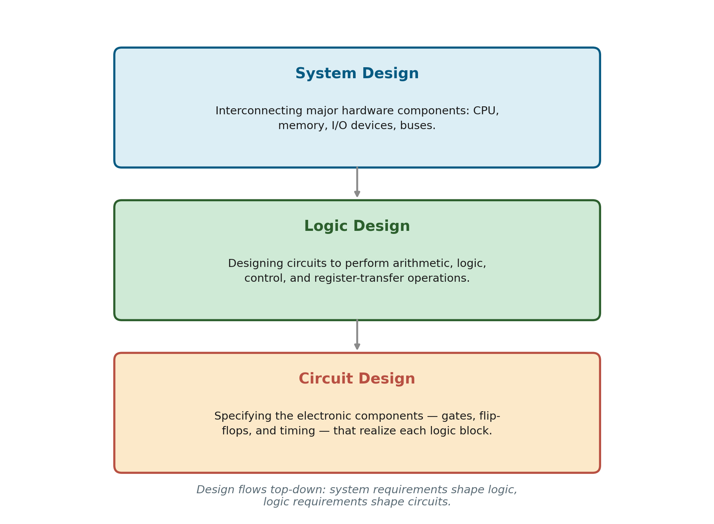

Computer Design
The previous page introduced three perspectives on computer hardware — organization, design, and architecture. This page is entirely about the middle one: computer design, the actual engineering process of building hardware, and closes out Unit 1.
Computer Design, in Precise Terms
Computer design is concerned with the hardware design of the computer. Once the computer specifications are formulated, it is the task of the designer to develop hardware for the system. Computer design is concerned with the determination of what hardware should be used and how the parts should be connected. This aspect of computer hardware is sometimes referred to as computer implementation.
Notice how this differs from organization (covered on the previous page): organization examines hardware that already exists and verifies it works correctly; design starts from a specification and builds hardware to satisfy it, from scratch. Later in this course (Chapters 5 through 7 of the textbook), you'll walk through exactly this process in full — designing and programming an elementary digital computer, step by step, using register transfer language to specify the requirements.
A Deeper Look: Three Levels of Design Detail
Beyond this section's brief definition, for additional clarity: computer design in practice happens at several levels of detail, moving from broad structure down to physical components. This isn't a framework spelled out explicitly in the definition above, but it's a standard, widely-used way of organizing the design process that applies directly to what you'll do later in this course.

1. System Design
The broadest level: deciding how the major hardware components — CPU, memory, I/O devices, the buses connecting them — fit together into a complete system. This is where decisions like "how much memory," "how many I/O ports," and "what overall performance target" get made, using the block diagram of a digital computer (covered earlier in this unit) as the conceptual map.
2. Logic Design
One level more detailed: designing the actual digital circuits that perform the required arithmetic, logic, control, and register-transfer operations decided at the system level. This is where the Boolean algebra, logic gates, and K-map simplification covered earlier in this unit stop being abstract topics and become the actual tools used to build real circuits.
3. Circuit Design
The most detailed level: specifying the actual electronic components — individual gates, flip-flops, and their timing characteristics — that physically realize each block from the logic design. This is closest to the physics and electronics side of the discipline, dealing with real voltage levels, propagation delays, and component tolerances.
Design Considerations
At every level, computer design is a balancing act between competing goals:
- Performance — how fast the resulting hardware runs.
- Cost — how expensive the hardware is to manufacture, which often trades directly against performance.
- Compatibility — whether the design correctly implements the required architecture, so existing software keeps working.
This is exactly the same trade-off space that produces the "budget vs. mainstream vs. high-end" organizations discussed on the previous page — different design decisions at each level, all implementing the same architecture.
Common Pitfalls
- The three levels aren't independent steps done once — decisions at one level constrain and get revisited based on what's feasible at the level below. Real design is iterative, not strictly linear.
- Logic design and circuit design are often confused — logic design works with abstract gates and Boolean functions; circuit design works with the physical electronic components that implement those gates.
Applications
- Every chip you'll study for the rest of this course — from the Basic Computer in later units to real modern CPUs — was produced by exactly this system → logic → circuit design flow.
- CAD/EDA tools used by real chip designers are organized around these same three levels, with different software tools specialized for each.
- Career paths in computer engineering commonly specialize at one of these three levels — system architects, logic/RTL designers, and circuit/VLSI designers are recognized, distinct roles in industry.
Summary
| Level | Deals with |
|---|---|
| System Design | How major components (CPU, memory, I/O, buses) fit together |
| Logic Design | Digital circuits for arithmetic, logic, control, and register-transfer operations |
| Circuit Design | Actual electronic components — gates, flip-flops, and timing |
This closes out Unit 1: Data Representation & Digital Fundamentals — from number systems all the way to how a computer is actually designed and built. Unit 2 moves into Combinational and Sequential Logic, where the logic gates and K-maps from this unit become full circuits: adders, multiplexers, registers, and counters.